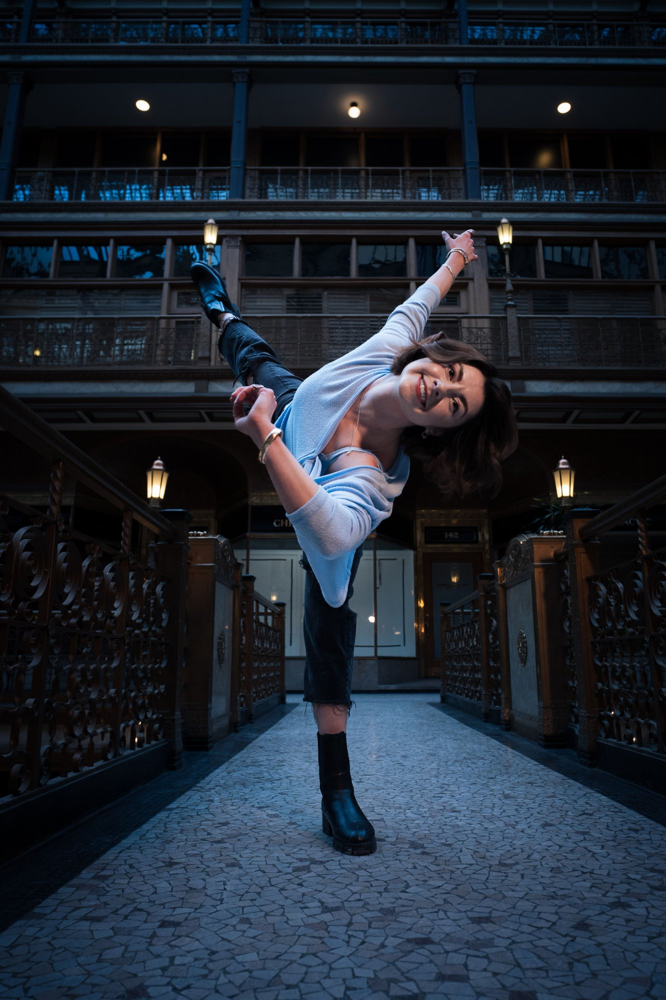

On Stage & Behind the Work
Ten years of performance, community, and choreographic work — from principal roles to original works created for Cleveland stages and beyond.

Dance Reel — Ohio Contemporary Ballet

Daisy Hill
Choreography: Francisco Gella · 2024 · I portrayed Daisy Hill and begin with my hair down on the box.

Aposiopesis
Choreography: Charles Anderson · 2016 · I am the principal woman.

Rita
Choreography: Ivan Alonso · 2017

Four Last Songs
Choreography: Richard Dickinson · 2023 · I do sections in the beginning; final pas de deux at 14:30.

Dark Matter
Choreography: Tommie-Waheed Evans · 2018 · I start walking across the front and perform the principal role.

3am
Choreography: Andrew Carroll · 2017

The Nutcracker
Choreography: Richard Dickinson · 2022 · I portray Clara.

Surge. Capacity. Force.
Choreography: Tommie-Waheed Evans · 2017 · I start with the solo in the corner.

Carmen
Choreography: Richard Dickinson · 2025 · I am in the red dress.

House Music Variations
Cleveland Public Theater · 2023

Schubert Shuffle
Ohio Contemporary Ballet Center for Dance · 2025

The Rockcracker
Akron Civic Theater · 2021 · Excerpts

Flicker
Butler Ballet Black Box Theater · 2015

Stellar Syncopations
EJ Thomas Hall · 2019

Mars Dance
Baldwin Wallace Gamble Auditorium · 2022

Envisage
Cleveland Public Theater · 2018

Resilia
Cleveland Public Theatre · 2016
Where Movement
Becomes Medicine
Arts in Motion Wellness is my private practice at the intersection of movement, arts, and community health. Whether you're an individual seeking joyful embodied wellness, a healthcare provider curious about social prescribing, or an organization looking to bring arts-based programming to your community, I'd love to connect.
Private & Small Group Lessons
Virtual and in-person movement instruction tailored to your goals, ballet technique, joyful movement for wellness, alignment work, or dance as a tool for emotional regulation and self-expression. All ages and abilities welcome.
Social Prescribing Consulting
Consulting for healthcare systems, community health organizations, and nonprofits interested in integrating arts-based social prescribing into their practice, drawing on graduate research, clinical training, and a decade of community partnership work.
Arts in Health Program Design
Collaborative design and facilitation of arts-in-health programming for hospitals, senior communities, schools, and nonprofits. Trauma-informed, evidence-informed, and built around your community's specific strengths and needs.
Interested in working together?
Whether you're an individual, a healthcare provider, or an organization, I'd love to hear what you're working on and explore what's possible together.
Work With Me
My background spans arts administration, community health, social prescribing, and professional dance. Resumes below are tailored for different contexts. Reach out if you'd like to discuss a specific opportunity.
Let's Connect
I'm always open to conversations about collaboration, consulting, teaching, speaking, or simply connecting with others who care about the intersection of arts and human health. Don't hesitate to reach out.